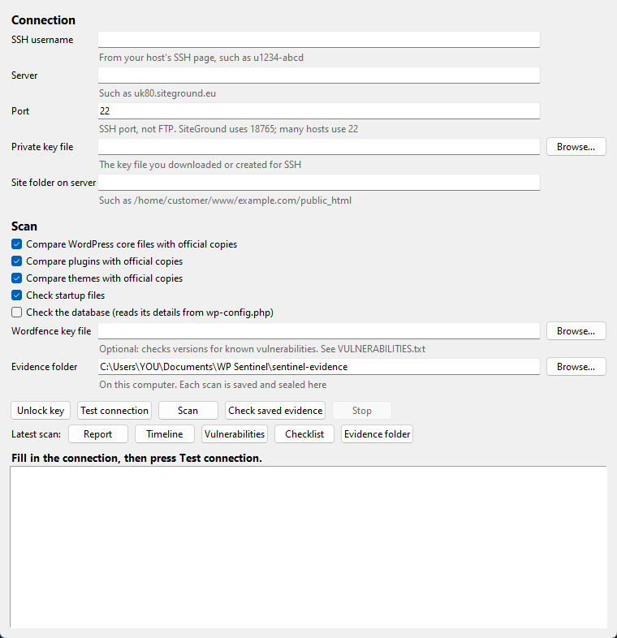
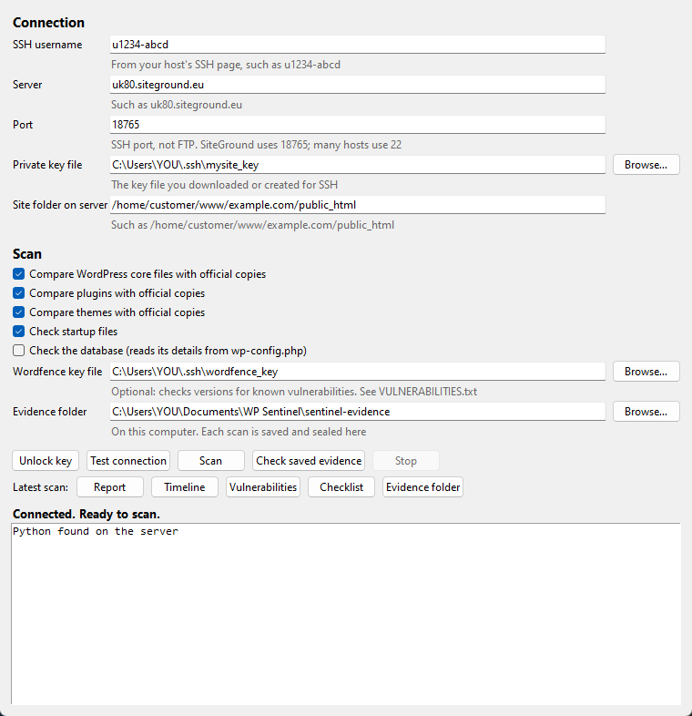
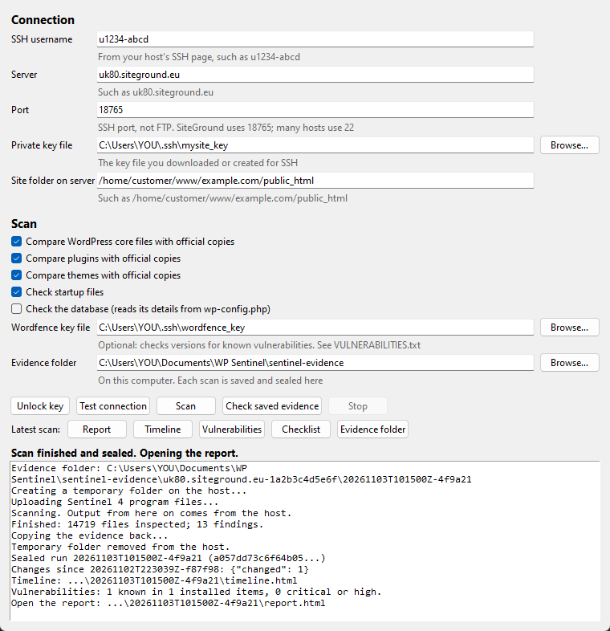
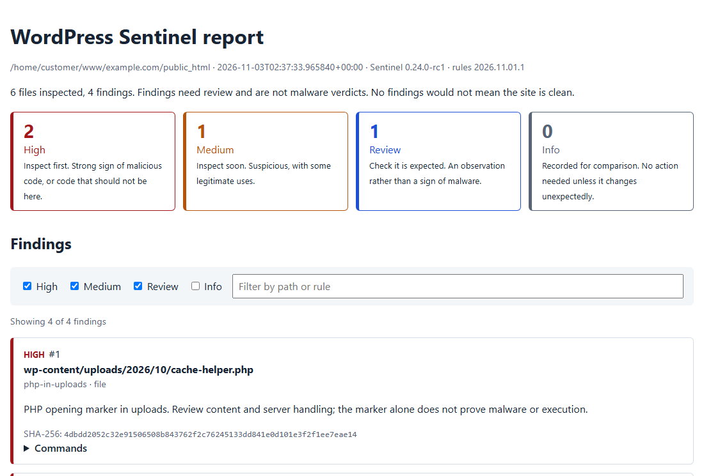

A Plain-English Guide to WP Sentinel
For small businesses and site owners who want to check a WordPress website for malware themselves, step by step, from setting up for the first time to cleaning up and staying safe.
WP Sentinel 0.24 · wp-sentinel.co.uk
Made by Little Web Shack · littlewebshack.com
Free and open source under the MIT licence
If you're setting up for the first time, read chapters 1 to 4 in order. They take you from nothing to a finished scan and a report you can understand.
If you already think your site has been hacked, still do chapters 1 to 3 first, because you need a working scan, then follow chapter 5 step by step.
You don't need to be technical. Everything in chapters 1 to 6 is done by filling in a form and pressing buttons. The few places where you type something are shown exactly, ready to copy.
Five minutes here will save you hours later.
Sentinel runs on your own computer. It connects to your website's hosting account over a secure connection called SSH, looks through every file of your WordPress site, and brings back a report. It also:
A security plugin runs inside the website it's checking. If the site has been hacked, the attacker can switch the plugin off, hide files from it or change its results, and a badly broken site can't run the plugin at all. Sentinel never runs anything on your site and keeps its evidence away from it, so a hacked site can't interfere.
Your host is a good first call. Many offer malware clean-up, and they can see things Sentinel can't.
Before you change anything, make a backup of your whole site, files and database, and keep it somewhere other than the website. Most hosts have a backup button in their control panel. A backup of a hacked site is still useful: it's your safety net if a clean-up goes wrong, and it's evidence.
You only do this once. Allow about 30 minutes. After this, each scan is a couple of clicks.
Sentinel is written in Python, a free programming language. You don't need to learn it; Sentinel just needs it to be installed.
python --versionYou should see something like
Python 3.14.0. If you see "Python was not found", see chapter 7.Documents\WP Sentinel.That's it. Sentinel doesn't need installing; it runs from that folder. Your scans will also be saved there, in a folder called sentinel-evidence.
Log in to your hosting control panel and find the SSH page. You need four things from it. Write them down:
| What | Looks like | Notes |
|---|---|---|
| Username | u1234-abcd | Often different from your control panel login |
| Server (hostname) | uk80.siteground.eu | A name, not a web address. No https:// |
| Port | 18765 or 22 | The SSH port. Not 21, which is FTP |
| Site folder | /home/customer/www/example.com/public_html | Where your WordPress files live on the server |
An SSH key is like a very long password stored in a file. Your host keeps one half, the public key, and you keep the other half, the private key, on your computer. You also protect it with a passphrase, so a stolen copy is useless on its own.
-----BEGIN and -----END lines.Go to Security › SSH Access › Manage SSH Keys. Choose Generate a New Key and set a passphrase. Back on the list, Authorize the new public key, then View/Download the private key. Some hosts need you to ask support to switch SSH on first, and to tell you the port.
Search your host's help pages for "SSH key". If your plan has no SSH at all, ask your host whether it can be switched on. Sentinel can't scan without it.
C:\Users\YOUR-NAME. If there's no folder called .ssh, create one, with the dot at the start..ssh folder and name the file after your site, such as mysite_key. There's no .txt at the end.This file is the key to your hosting account. Never email it, upload it to your website or share it. If you think someone has a copy, delete the key in your host's control panel and make a new one.
This lets Sentinel check your plugin and theme versions against Wordfence's public list of known security holes. It's often how attackers get in, so it's well worth doing.
.ssh folder as wordfence_key with "All files" as the type.The key only ever goes to Wordfence. Sentinel never puts it in reports or on your website.
Now the fun part. This is where all that setup pays off.
powershell and press Enter.python sentinel-app.py
The WP Sentinel window opens. Leave the terminal window open behind it while you work.
Always run Sentinel on your own computer. If your terminal shows a line like PS C:\Users\...>, you're in the right place. If it shows something like u1234-abcd@uk80.siteground.eu:~$, you're logged in to the server. Type exit to get back.

.ssh folder./.wordfence_key, if you made one.Sentinel remembers all of this for next time. It never saves your passphrase.
yes and press Enter, then close the window and press Test connection again.
Press Scan. A typical site takes a few minutes. Progress appears in the box at the bottom. When it's finished, your report opens in your web browser.

The buttons under Latest scan open the pages for your newest scan:
| Button | What it shows |
|---|---|
| Report | Everything the scan found, most important first |
| Timeline | When files were changed, day by day, and anything unusual about them |
| Vulnerabilities | Known security holes in your installed versions, and the version that fixes each one |
| Checklist | A clean-up checklist built from this scan, for use after a hack (chapter 5) |
| Evidence folder | Opens the folder where every scan is kept |
Most findings on a healthy site are harmless. This chapter helps you tell which ones need a closer look.

| Priority | What it means | What to do |
|---|---|---|
| High | A strong sign of malicious code, or code where it shouldn't be | Look at these first |
| Medium | Suspicious, but some legitimate software does this too | Look soon |
| Review | An observation, not a sign of malware | Check it's something you expect |
| Info | Recorded so a change stands out next time | Nothing, unless it changes |
Each finding shows the file, the rule that noticed it, and a sentence explaining why. The tick boxes and filter at the top let you hide what you've already checked.
wp-content, especially with names that sound official but aren't, such as wp-login-check.php.The first report on any site has a few findings to get used to. Once you've checked them, what matters most is what changes from one scan to the next. Something new is far more interesting than something that's been there, unchanged, for months.
From your second scan on, the last lines in the window include something like:
Changes since 20261102T223039Z-f87f98: {"changed": 1}
That means one file is different from the previous scan. Added means new files, and missing means removed ones. After you update WordPress or a plugin, expect plenty of changes. When you haven't touched the site, a log file or cache file changing is normal, but new PHP files are worth investigating.
Timeline shows how many files changed on each day. A sudden burst on a day when nobody updated anything is a clue, and it can tell you roughly when a hack happened. That date helps you pick a clean backup.
Vulnerabilities lists known security holes in your installed versions, with how serious each is and which version fixes it. Anything marked Critical or High should be updated, or the plugin removed, straight away.
Take a breath. Work through these steps in order. Don't skip ahead to deleting things.
Easiest, if you have one. Restore a backup from before the date you found on the Timeline, then immediately update everything and close the hole (step 6). Anything added to the site since that backup will need adding again.
Good for most people. Reinstall WordPress from Dashboard › Updates › Re-install, and delete and reinstall affected plugins from the Plugins page. Then delete the files that shouldn't exist, such as PHP in uploads, using your host's File Manager. Keep a copy of each before deleting it.
For confident users. Sentinel can swap changed files for verified clean copies and move bad files into a private quarantine, with an undo for both. These run as typed commands on the server; see CLEAN-REPLACEMENT.txt and BATCH-QUARANTINE.txt in the documentation folder.
No shame in it. Your host may offer a malware clean-up service. Give them your Sentinel report; it saves them time. For sites holding customer data or taking payments, a professional incident response is worth the cost.
Deleting the wrong file can take your site offline. Before deleting anything, check it isn't part of a plugin or theme you use, and keep a copy. If you're unsure, route A or D is safer.
The Checklist covers these in detail, but here's the short version. Change them after the site is clean, or the attacker may simply read the new ones:
A few small habits stop most attacks before they start.
| When | What |
|---|---|
| Every week | Open WP Sentinel and press Scan. Look at what changed. If nothing new appears in the report, you're done. |
| After updates | Scan again, so the next scan's changes only show what happened since. |
| Every month | Press Check saved evidence. It confirms none of your saved scans has been altered. |
| Always | Keep WordPress, plugins and themes up to date. Remove anything you don't use. Use strong, unique passwords and two-factor sign-in for administrators. |
Your sentinel-evidence folder is the history of your site. It's what lets Sentinel spot changes, and it lets you prove what was found and when.
Sentinel can also scan on a schedule and email you only when something new turns up. Setting that up involves a settings file and a scheduled task, so it's covered in MONITORING.txt in the documentation folder rather than here. A weekly scan with the window is a fine place to start.
Every one of these has caught out a real person setting Sentinel up. You're in good company.
| What you see | What it means and what to do |
|---|---|
| "Python was not found; run without arguments to install from the Microsoft Store" | Python isn't installed, or Windows can't find it. Install it from python.org (chapter 2, step 1) and tick "Add python.exe to PATH". Then close the terminal and open a new one. |
| "No such file or directory" when starting Sentinel | The terminal isn't in your WP Sentinel folder, or you're logged in to the server. Check the prompt starts with PS C:\ and shows your Sentinel folder. |
"Connection refused" to 127.0.0.1 | 127.0.0.1 always means "this computer". Put your host's server name in the Server box, such as uk80.siteground.eu. |
| "Could not connect", or no answer after 60 seconds | Usually the wrong port. Use the SSH port from your host's SSH page: not 21, which is FTP. SiteGround uses 18765. Also check the server name has no https:// or slashes. |
| "The server refused the login" | Press Unlock key and type your passphrase, then test again. If it still fails, check the username, and that you chose the right key file. Some hosts take a few minutes to activate a new key. |
| "Identity file … not accessible" | The key file isn't where the form says. Press Browse… and choose it again. |
| "This computer has not met this server before" | Normal the first time. Say yes, check the fingerprint, type yes. See chapter 3. |
| "The OpenSSH Authentication Agent is not running" | Windows' key-unlocking service is switched off. It needs switching on once, by someone with administrator rights. See below. |
| Vulnerability check "skipped: no API key" or "key refused" | Choose your Wordfence key file in the form. If it's refused, check the file holds only the key, with nothing else, or make a new key on wordfence.com. |
| You pressed Stop during a scan | A temporary folder starting .sentinel-run- may be left in your home folder on the server. Delete it with your host's File Manager. |
| Check saved evidence lists folders "not covered by a chain" | Usually scans that stopped early, which are harmless, or an evidence folder that was copied over another. See "Look after your evidence folder" in chapter 6. |
On Windows, open the Start menu, type PowerShell, right-click it and choose Run as administrator. Type these two lines:
Get-Service ssh-agent | Set-Service -StartupType Automatic Start-Service ssh-agent
Close that window. Use a normal PowerShell window, not an administrator one, for everything else. Files Sentinel creates from an administrator window can end up locked away from your normal account.
The window works the same way. Where Windows opens a small window for your passphrase or the server's fingerprint, the Mac version shows you a command to paste into the Terminal app instead.
Everything the window does can be typed instead. Run these in a terminal in your WP Sentinel folder, on your own computer.
python sentinel-remote.py scan --host u1234-abcd@uk80.siteground.eu --port 18765 --identity C:\Users\YOU\.ssh\mysite_key --root /home/customer/www/example.com/public_html --core --plugins --themes --persistence --vuln-key-file C:\Users\YOU\.ssh\wordfence_key
Add --db-from-wp-config to check the database as well.
ssh-add C:\Users\YOU\.ssh\mysite_key
python sentinel-remote.py verify
python sentinel-remote.py checklist --run sentinel-evidence\SITE-FOLDER\RUN-FOLDER
The site and run folder names are shown in the window's output after each scan.
python sentinel-remote.py scan-all --host u1234-abcd@uk80.siteground.eu --port 18765 --identity C:\Users\YOU\.ssh\mysite_key --core --plugins --themes --persistence
| Guide, in the documentation folder | Covers |
|---|---|
| APP.txt | The WP Sentinel window in more detail |
| REMOTE.txt | Scanning from your computer, evidence and its limits |
| RULES.txt | Everything the scan checks for |
| VULNERABILITIES.txt | The Wordfence check |
| CHECKLIST.txt | The post-incident checklist |
| CLEAN-REPLACEMENT.txt, BATCH-QUARANTINE.txt | Sentinel's repair tools |
| MONITORING.txt | Scheduled scans and email alerts |
| ACCOUNT.txt | Scanning several sites on one account |
| Word | Meaning |
|---|---|
| SSH | A secure way for one computer to log in to another and run commands. Sentinel uses it to reach your hosting account. |
| SSH key | A pair of matching files that work like a very long password. The public half sits with your host; the private half stays on your computer. |
| Passphrase | The password that protects your private key file. |
| Port | A numbered door on the server. SSH and FTP use different doors, so the number matters. |
| Fingerprint | A short code identifying a server, so you know you're connecting to the real one. |
| Malware | Any software put on your site to do harm, such as sending spam, redirecting visitors or stealing data. |
| Backdoor | A hidden file that lets an attacker back in, even after passwords are changed. |
| Vulnerability | A known flaw in a version of some software that attackers can use to get in. Usually fixed by updating. |
| Core | WordPress itself, as opposed to plugins and themes. |
| Drop-in | A special file in wp-content that changes how WordPress works, often used by caching plugins. |
| Salts | Secret values in your site's settings that keep logins secure. Changing them signs everyone out. |
| Hash | A fingerprint of a file's contents. If even one character of the file changes, the hash changes completely. |
| Evidence, sealed | Sentinel records a hash of every report and links each scan to the one before, so any later change can be detected. |
| Quarantine | Moving a suspicious file somewhere safe and private instead of deleting it, so it can be examined, or put back if it was innocent. |
WP Sentinel is free, open-source software, released under the MIT licence. It's provided as it is, with no warranty: it helps you find problems, but the decisions and any changes to your site are yours.
Updates, news and this guide: wp-sentinel.co.uk. Made by Little Web Shack, littlewebshack.com.